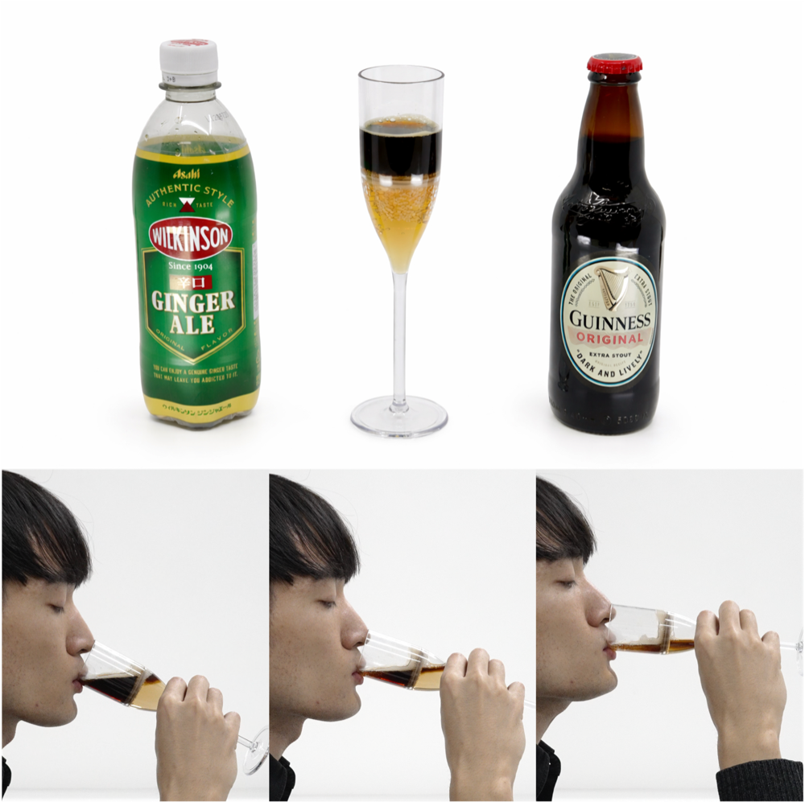

飲む過程で飲料の混合率を連続的に変化させることで、濃厚な「コク」と後味の「キレ」を両立するグラス型インタフェース。 A glass interface that balances rich "koku" and clean "kire" by continuously changing the beverage mixing ratio during consumption.

「コク」と「キレ」はどちらも飲料体験において重要ですが、単一の飲料で両立させることは困難です。うつろいドリンクは、コクを担う飲料とキレを担う飲料をグラス内で層状に分離し、飲むにつれて混合率が変わるように設計することで、時間的に移ろう味わいを生み出します。
"Koku" and "kire" are both important qualities in beverage experiences, but they are difficult to balance within a single liquid. Utsuroi Drink separates beverages responsible for each quality into layers inside a glass and changes their mixing ratio over time, creating a taste experience that shifts during drinking.
グラス内部の仕切り構造により、上層の飲料と下層の飲料が飲用中に連続的に混ざるプロトタイプを制作しました。黒ビールとジンジャーエールを用いた検証では、濃厚な風味から爽快な後味へ移行する体験を評価しました。
We built a prototype that uses an internal partition structure to continuously mix the upper and lower beverages while drinking. In a validation using stout beer and ginger ale, we evaluated an experience that transitions from a rich flavor to a refreshing aftertaste.